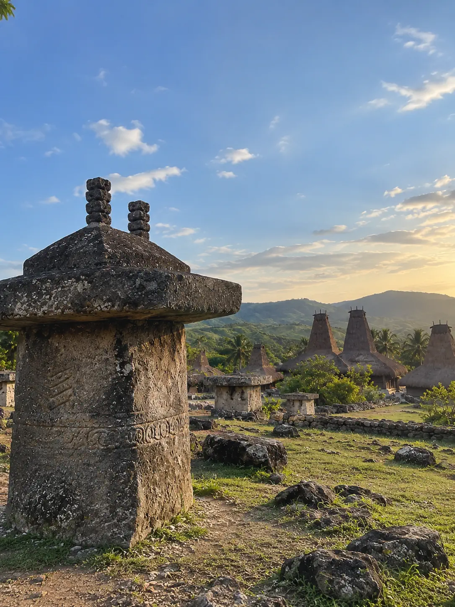
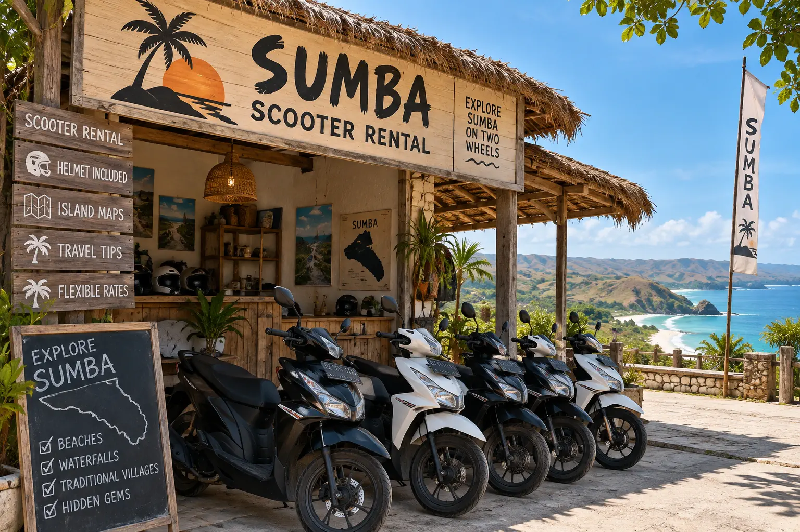
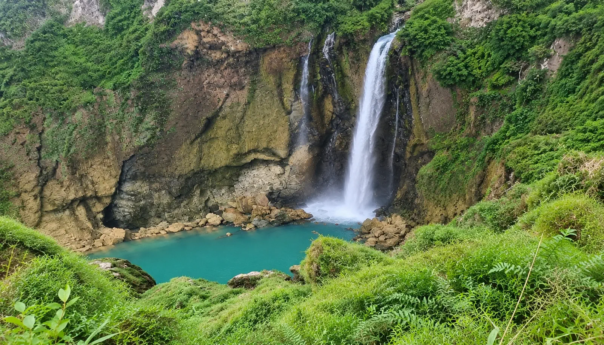

Central Sumba is discovered differently from the West: fewer beaches, more relief - hills, rice terraces clinging to the slopes, and waterfalls which have nothing to envy of their more well-known neighbors. It is also here, around Waikabubak, that the island reveals its most ancient past: megalithic sites still used today, where funeral rites perpetuate a centuries-old social order.
Waikabubak is the natural starting point for the area — it is also the most central scooter pick-up point on the island, halfway between West and East. And contrary to what one might believe, the city itself is worth lingering around a little, not just passing through.
The megaliths of Anakalang
Less than an hour from Waikabubak, Anakalang brings together several of the most impressive megalithic tombs on the island — some stone blocks weigh several tons, cut and moved using traditional methods that command respect. It is one of the best places to understand the relationship of Sumbanese culture to death and ancestors, a subject which runs through the entire identity of the island. Every two years, on a date fixed by the full moon, the village hosts the Purung Takadonga Ratu — a collective wedding ceremony which remains one of the most significant traditional events on the island.

Waterfall of Lapopu
Lapopu is a must: at 90 meters, it is officially the highest waterfall in the entire province, just 90 minutes' drive from Waikabubak, on good roads. Standing in front of its massive, stepped curtain of water remains a memorable moment for most visitors — and unlike other sites in the area, access requires no special expertise. The site was even used as the setting for an Indonesian film, which only added to its local reputation.

Associated service
Rent a scooter in Waikabubak
The most central pick-up point for exploring the Center.
Waterfall of Matayangu
Less accessible than Lapopu, Matayangu remains a real hidden gem: the trail to get there is rough at the end, but the reward is well worth the effort for those who like places that are still wild. Few visitors know this before arriving: it is not a single waterfall, but three distinct waterfalls which meet at the same pool - the main falls from a notable height, while two others spring directly from the rock wall, halfway up. “Matayangu” literally means “source of life” in the Sumbanese language; locals consider the site sacred, guarded by Marapu spirits. A 4x4 or a driver who knows the track is strongly recommended on the last portion.

Associated service
Private driver — day
For the tracks that the scooter doesn't like, up to Matayangu.
What else to do in the Center
The Center naturally combines with the West — the villages of Praijing and Tarung, just outside Waikabubak, belong geographically to both zones. If you prefer an organized package rather than independence on a scooter, our trek service covers the last portions on foot to Matayangu. Two other villages are worth a detour: Praigoli, which sometimes hosts Pasola, and Waigali, perched on its hill, the legendary origin of this same tradition — both in the Wanokaka area, alongside a third, lesser-known village, Waiwuang. And for an even more authentic immersion, Wailang is distinguished by its houses, all actually inhabited, without staging for visitors.